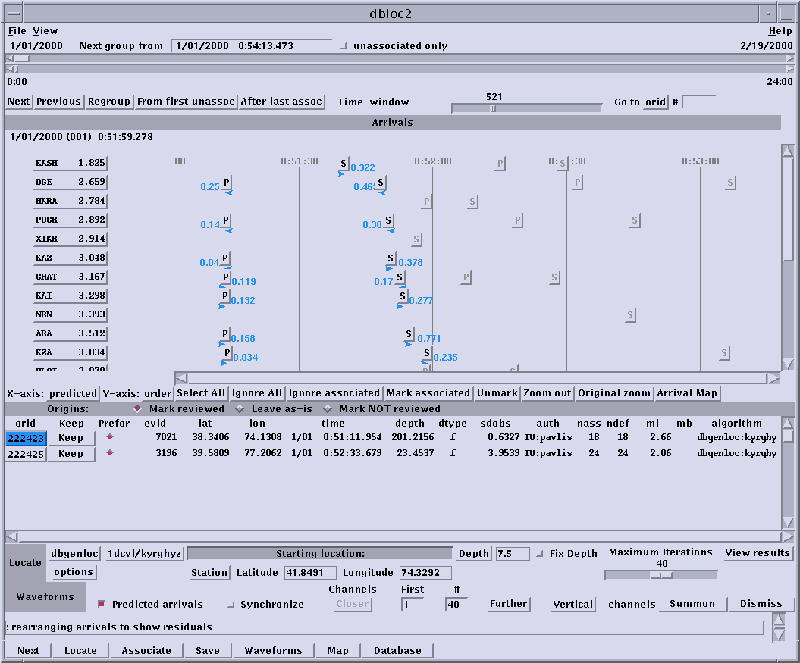

Lesson 5: Local and regional event seismograms
For this exercise we will be working with data from the Tien Shan experiment
from 1999 and 2000. Things you should learn from this exercise are:
-
Understand the first order characteristics of how seismograms change from
0 to distances of 10 to 15 degrees. This is commonly called local
to regional distances.
-
Understand what the phases Pg, Pn, Sn, and Lg are and what they commonly
look like on real data.
-
Be able to disciminate deep events from shallow events at regional distances.
Step 1: copying database files
-
Create a new directory somewhere under your home directory to hold the
data for this exercise.
-
Make the new directory the current directory by using the cd command
-
Click
here to download a copy of the data. Put these data in
your working directory
-
Unpack the tar file using: zcat lesson5.tar.gz | tar xvf -
-
Verify everything is intact by running dbe or dbpick against the tsr database
that should now be present in your working directory.
Step 2: start up dbloc2
For this exercise we want to use a GUI front end to an analyst system called
dbloc2. Assuming you are still in the working directory you copied
these files to, you just type:
dbloc2 tsr
which should bring up a control panel that looks something like this:

For this exercise we will only be using four buttons on this GUI:
-
On the bottom row: Next
-
On the bottom panel near the right side: "Show Waveforms"
-
Adjacent to summon is a pull down menu labeled above as "Vertical".
-
A pulldown method on the center panel with the buttons labeled as orid.
Step 3: Basic navigation
Assuming everything works (sometimes the first attempt to start dbloc2
can fail, so if it does try again) do the following:
-
Push the "Arrival Map" button (near the center of the window). This
brings up a useful map showing where the stations are located geographically
relative to the event location.
-
Push the "Show Waveforms" button.
-
View the data with a 1Hz highpass filter or you won't see much with most
of these events.
-
Position the pointer over the "Vertical" button and hold down the left
mouse button. A pull down menu appears. Select "All".
This should bring up all the data for the first event. You should
be aware that the data are brought up in order of increasing distance
and have been time shifted to line up all arrivals on the theoretical arrival
time of the P phase (rec and pal commands of dbpick).
-
Position your cursor over the button below "orid" on the left side of the
center panel, push and hold the left mouse button, and then select "Show
residuals" for this origin estimate.
-
Push "Show Waveforms" and explain what you see.
-
Push the "Next" button followed by "Show Waveforms" to get to the next
event in the database.
Step 4: study a particular event
The final objective is to browse through this data set and see for yourself
how seismograms develop at increasing distance from the epicenter of an
earthquake. Make use of the "Arrival Map" and the tabulated
event location information in the control panel to make sure you understand
which event's waveforms you are viewing. Try to complete the
following for discussion in next week's class.
-
Find a shallow event that was recorded out to a distance of at least 500
km. Use the dbpick print function to make hard copies for class discussion
of seismograms from three distance ranges (note the dbloc2 panel shows
the distance to each station in degrees): (1) as close as possible,
but definitely less than 1 degree, (2) 1-3 degrees, and (3) greater than
4 degrees. This should be printed as three pages with all one of
the three components observed at all station on each sheet of paper.
Please mark the epicentral distance on each sheet. It would also
be useful to show the map location displayed in the "Arrival Map" window
also.
-
Find a deep event from the Hindu Kush region. The key parameter to
identify is the estimated event depth. There are numerous intermediate
depth events from this region. Find a station at a comparable distance
to the one's you picked for (2) and (3) above (number (2), the "close"
case, is impossible with these data because of the location of the sources
relative to the earthquakes) and make hard copies as you did before.
Come prepared to discuss how the two sets of seismograms differ.
There is at least one Hindu Kush event that was large enough to be
visible all the way out to stations in northern Kazakhstan (AKTK, KURK,
VOS, ZRNK, BRVK, CHKZ) at distances over 15 degrees. Bring printouts
of some of these stations for further discussion in class next week.